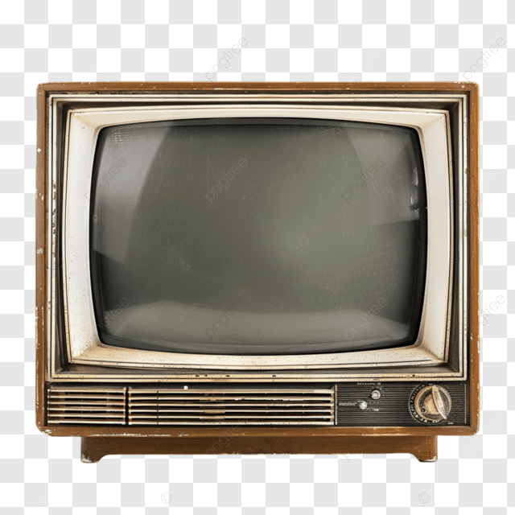

Un exemple d'article
Ici vous placez votre texte. Vous pouvez raconter l'histoire de la télévision, présenter une série ou partager un souvenir.

Photos

Ajoutez ici d'autres textes, photos ou vidéos selon vos besoins.
Du noir et blanc au streaming
Ici vous placez votre texte. Vous pouvez raconter l'histoire de la télévision, présenter une série ou partager un souvenir.

Ajoutez ici d'autres textes, photos ou vidéos selon vos besoins.